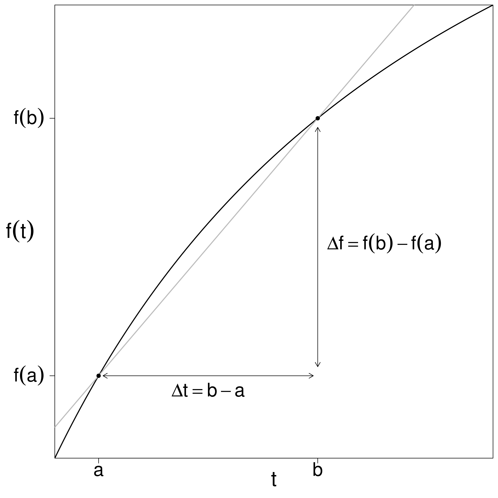
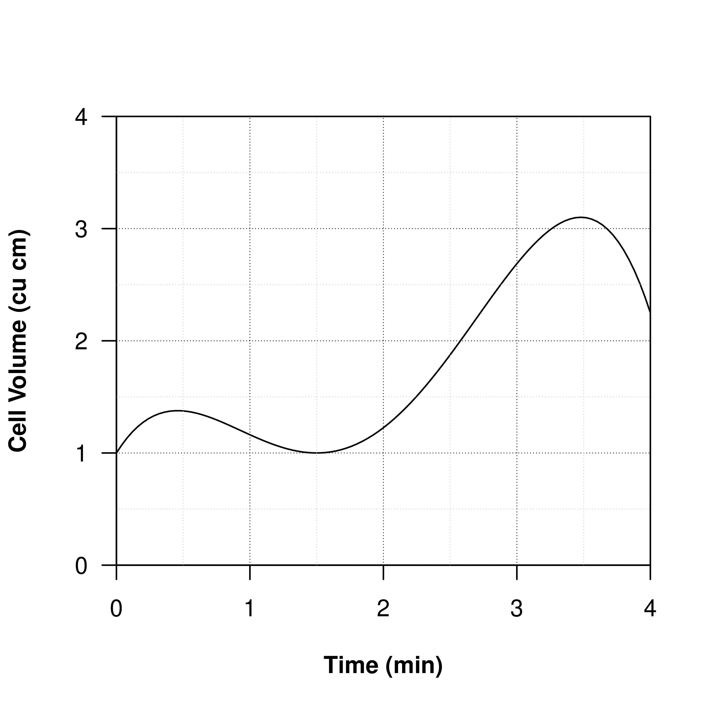
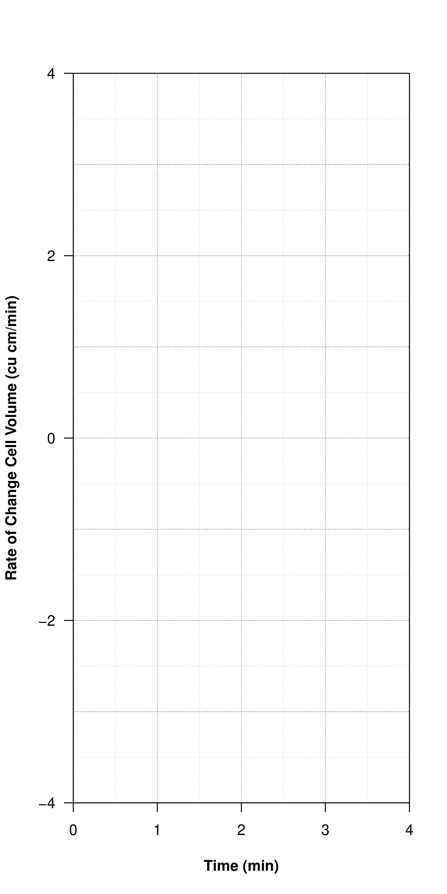

We will extend our notion of ‘slope’ to allow ourselves to make precise descriptions of how values of all functions, not just linear functions, change.
Average and instantaneous rates of change.
Consider the function \(f(t)\text{,}\) perhaps describing the position of a frog while it crosses a pond, graphed below. Assume that \(f\) is measured in meters and \(t\) in seconds.

Figure2.2.1.image
The slope of the secant line that connects the points \((a, f(a))\) and \((b, f(b))\) on the graph of \(f(t)\) is,
which we call the instantaneous rate of change of \(f(t)\) at \(t~=~a\text{,}\) again in meters per second.
Aside (\(b\rightarrow a\) vs. \(\Delta
t\rightarrow 0\)).
Last time in our limit definition, we used the limit as \(\Delta t\rightarrow0\text{.}\) We will briefly show why that is equivalent to the approach above and computationally easier. Since \(\Delta t = b-a\text{,}\) we have \(b=a+\Delta t\text{.}\) Taking \(b\rightarrow a\) is the same as taking \(\Delta t \rightarrow
0\text{.}\) Substitute \(b=a+\Delta t\) in the definition for \(m_{tan}\) and simplify,
We define the instantaneous rate of change at \(t=a\) to be the slope of the tangent line to \(f(t)\) at \(t=a\text{,}\) given by the derivative\(f'(a)\text{,}\) below,
inside this limit, the change in output is \(\Delta f = f(a+\Delta t)-f(a)\) while the change in input is simply \(\Delta t\text{.}\)
Shorthand.
Rather than using the two symbols required to write \(\Delta t\text{,}\) we often use a single symbol \(h\) to denote the change from \(a\) to \(b\) in the definition (and in the picture above). This amounts to saying that \(b= a+h\) rather than \(b=a+\Delta t\) (since \(h=\Delta t\)), so that the derivative of \(f(x)\) at \(x=a\) is
A function \(f\) is differentiable at the point \(a\) if the function has a well-defined tangent line with finite slope at point \(a\text{.}\) If we say a function is differentiable without mentioning a particular point, we mean it is differentiable everywhere.
Problem behaviors.
Functions fail to be differentiable at points on the graph with jumps, corners, and vertical tangents. See graphs from the earlier lecture as examples of discontinuities.
Find the derivative, if it exists, of \(f(x)=mx+b\) at point \(x\) using the limit definition.
Find the derivative, if it exists, of the constant function \(f(x)=b\text{.}\)
Derivatives describe behavior.
Recall our discussion of the behaviors and slopes of linear graphs. We can now make similar statements for the graph of any function.
Table2.2.3.
Derivative
\(f'(x) =
\dfrac{df}{dx}\)
Function
\(f(x)\qquad\)
if \(f'(x)>0\)
if \(f'(x)=0\)
if \(f'(x)<0\)
A function \(f\) has a critical point 1 at \(x\) if \(f'(x)=0\) or if the derivative is not defined at \(x\text{.}\)
An aside: Expanding binomials.
Before moving forward it will be useful to review techniques for expanding binomials of the form \((x+y)^n\) for integers \(n\text{.}\)
\(\displaystyle (x+y)^1 =\)
\(\displaystyle (x+y)^{2} =\)
\(\displaystyle (x+y)^{3} =\)
Consider the quadratic function \(f(x)=x^{2}\text{.}\) Find the derivative \(f'(x)\text{,}\) if it exists, at an arbitrary point \(x\text{.}\)
Consider the following plot of cell volume versus time.


Suppose \(s(x)=f(x)+g(x)\) where \(f\) and \(g\) are both differentiable functions. Then the derivative of the sum is the sum of the derivatives
Find the derivative of \(f(x) = x^{2} + 3x+7\text{.}\)
Suppose \(p(x)=cf(x)\) where \(f\) is a differentiable function and \(c\) is a constant. Then the derivative of a constant times a function is the constant times the derivative of the function
This works for all powers \(n\) including fractions, provided that \(x>0\text{.}\)
Use the previous theorem to compute derivatives of the following power functions.
Higher derivatives.
We will learn how to interpret some higher derivatives soon, but we can already differentiate quite a few functions. We’ll cover this soon, but you might as well try computing the second derivatives, as illustrated below.
The mechanics are just the same. For problems involving exponentials and logarithms be sure to simplify as fully as possible first using log rules, otherwise we might not know what to do to compute the derivative!
The critical point of \(f(x) = 2x^{2}-7x+3\) is found by setting its derivative, \(f'(x) = 4x-7\text{,}\) equal to zero and solving for \(x\text{.}\) So, \(0=4x-7\text{,}\) solved for \(x\) gives \(x
= \dfrac{7}{4}\text{.}\)
3.
If the derivative is positive at some point, is the function increasing or decreasing at that point?